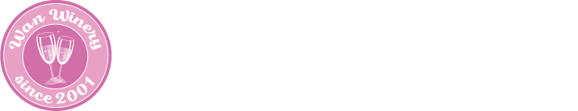

Wan Wineryご挨拶
category:Greetings
Wan Wineryは、2001年秋、緑豊かな長野県駒ケ根市に誕生した小さなワイナリーです。 オーナーはイタリア、フランス、スペインなどヨーロッパ各地のワイナリーで修行を積んだのち、 日本人の口と食事にあったワインを国産の安心できる材料で作りたい、という想いから帰国。 約5年の準備期間を経て、ブドウ栽培からワインの醸造、ボトリングまでを同じ場所でうことのできる環境を実現。 常にフレッシュなワインを提供できるワイナリーとして、現在では多くのお客様に愛されております。 また開園当初より「安心安全な材料で作るワイン」をモットーとし、原材料はすべて農薬や化学肥料を避け、 収穫まで手間暇かけてじっくり育てたブドウを使用。さらに醸造過程においても添加物を使うことなく昔ながらの製法を守ることで、自然で素朴な味わいが楽しめるワイン造りを行っています。 ―――日々の食事でもっと気軽にワインを楽しんでほしい――― それが私たちWanWineryの願いです。ワインとともに笑顔あふれる食卓を囲む、豊かなひとときを。私たちのワインが、皆さまのそんなステキな時間を演出することができるよう、今日も真摯に、丁寧に、一本一本に愛をこめてワイン造りに取り組んでいます。
Wan Winery
ブドウを育む駒ケ根の自然
category:Nature of winery
駒ケ根市の北、標高700mの丘に約30haにわたって広がるWan Wineryのvine yard。 赤ワインに適したメルロー、シラー、白ワイン向けのシャルドネ、ソーヴィニヨン・ブランなど10種類ほどのブドウを栽培しています。 このvine yardは、雨が少なく常に風が吹くこともあり、年平均気温が10～16℃と温暖であること、また高い糖度を得るため必要とされる十分な日照時間が確保できることから、おいしいブドウが育つ環境に恵まれています。 ブドウの木は、垣根のように育てる「垣根式栽培」を採用することで、土壌にまで日光が差しブドウの根を保護する下草の育成を促進。それにより木のすみずみにまでしっかりと養分が行き渡り、糖度の高いブドウが栽培できるだけでなく、昆虫や微生物などの小さな生き物にとっても快適な環境を生み出しています。 ブドウ栽培と同時に、生態系の保護も叶えられるサステイナブルなvine yardとして、これからも自然に根差したワイン造りを進めてまいります。
Wan Winery